Теоретический материал
Работа с Network Monitor
Скачать приложение можно по ссылке или на официальном сайте.
Network Monitor (Сетевой монитор) — это анализатор пакетов. Он позволяет собирать, просматривать и анализировать сетевые данные и расшифровывать сетевые протоколы . Его можно использовать для устранения неполадок сети и приложений в сети.
Начало работы Network Monitor
Для работы с сетевыми данными и протоколами необходимо открывать сетевой монитор от имени администратора (Правая кнопка мыши -> Запуск от имени администратора).
Открывшееся окно должно выглядеть следующим образом:

Открывшееся окно должно выглядеть следующим образом:
- Далее необходимо произвести его настройку:
- 1. Выбрать сеть Ethernet
- 2. Включить p-mode. Для этого необходимо два раза нажать на выбранную сеть, и в появившемся окне поставить галочку напротив p-mode и нажать на кнопку «OK».


Для анализа сетевых протоколов и пакетов нужно открыть новое окно захвата «New Capture». Сделать это можно двумя способами. Нажать на главном экране «New Capture» или на «New Capture Tab».

Открытая Capture выглядит следующим образом:

Окно захвата так же следует настроить. Открыть окно настроек «Capture Settings» в главном меню, два раза нажать на выбранную сеть Ethernet и выбрать p-mode.
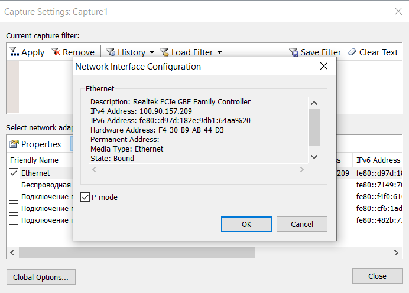Чтобы сохранить результаты захвата, следует нажать в меню File -> Save as.
Работа с Capture (окном захвата)
Для анализа сетевых протоколов и данных, необходимо запустить окно захвата, нажав на кнопку «Start», открыть браузер и выполнить нужные вам действия (Например, перейти на сайт), затем вернуться в окно захвата и остановить захват, нажав на кнопку «Pause» или «Stop». После захвата окно Capture будет выглядеть следующим образом:
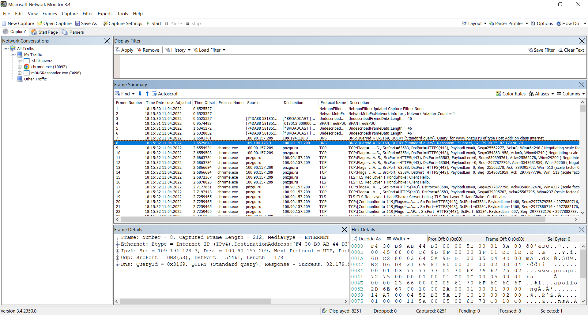В разделе «Network Conversations» представлен список приложений, на которые переходит сетевой трафик. «Frame Summary» отображает сводку кадров. При нажатии на кадр, появляется информация в разделах «Frame Details» и «Hex Details», которые отображают его детали в текстовом и шестнадцатеричном формате. В окно «Display Filter» вводятся фильтры для кадров.
«Frame Summary» имеет следующие разделы:
- Frame Number - Номер кадра
- Time Data Local Adjusted - Время и дата по местному времени
- Time Offset - Время смещения (Отсчитывается с момента запуска Capture)
- Process Name - Имя процесса, к которому относятся захваченные данные
- Source - IP-адрес или доменное имя источника данных
- Destination- IP-адрес или доменное имя приёмника данных
- Protocol Name - Имя протокола передачи данных
- Description - Данные
Данные из раздела Description подробно описаны в разделах «Frame Details» и «Hex Details». При нажатии на параметр в разделе «Frame Details» автоматически выделится информация в разделе «Hex Details» - это та же информация, представленная в 16-ричном формате. То же и с параметрами в разделе «Hex Details».
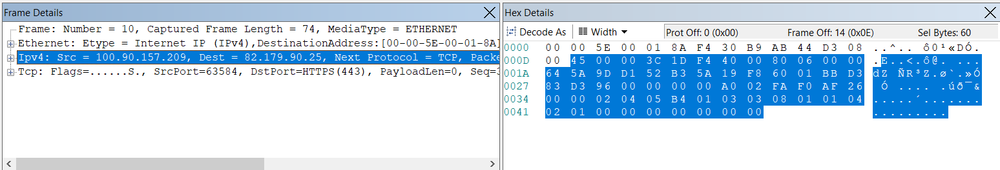Раздел «Frame Details» содержит следующие параметры:
- Frame - информация о рассматриваемом кадре (Номер кадра, его длина, тип сети)
- Имя сети (Например, Ethernet)
- Порт, по которому передаются данные (Например, IPv4)
- Протокол передачи данных (Например, TCP)
Фильтрация кадров
Кадры можно отфильтровать по протоколу передачи данных. Фильтр вводится в раздел «Display Filter», далее необходимо нажать кнопку «Applay». Чтобы отменить фильтрацию, необходимо нажать на кнопку «Remove». Так же фильтр можно выбрать из списка, нажав на кнопку «Load Filter».
Фильтров может быть несколько, в таком случае они перечисляются через AND (и) или OR (или).
Так выглядит список кадров с применением фильтрации по протоколу TCP. В списке остались только кадры с этим протоколом, остальные скрыты.
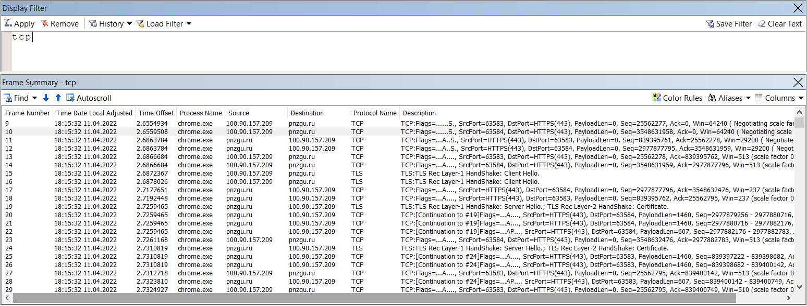Наиболее часто используемые фильтры:
- Ipv4.address=="client ip" и ipv4.address=="server ip"
- Tcp.port==
- Udp.port==
- Icmp
- Arp
- Property.tcpretranmits
- Property.tcprequestfastretransmits
- Tcp.flags.syn==1
Начало работы WireShark
Для работы с сетевыми данными и протоколами необходимо открывать программу от имени администратора (Правая кнопка мыши -> Запуск от имени администратора). Открывшееся окно должно выглядеть следующим образом. Справа от типа соединения в реальном режиме идёт демонстрация потребляемого трафика.
Далее необходимо выбрать сеть по которой будет проходить захват кадров и два раза нажать на выбранную сеть левой кнопкой мыши.
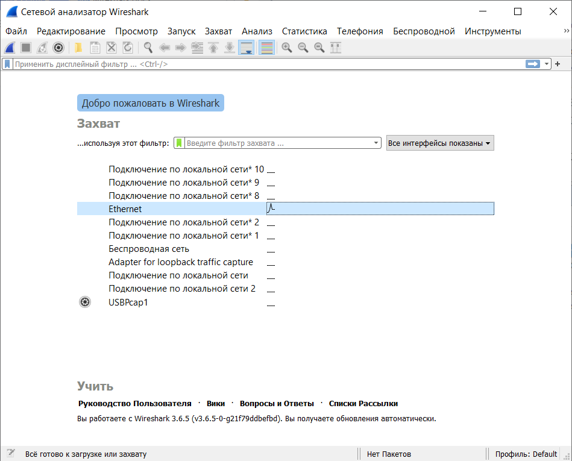Откроется окно, которое будет производить захват кадров.
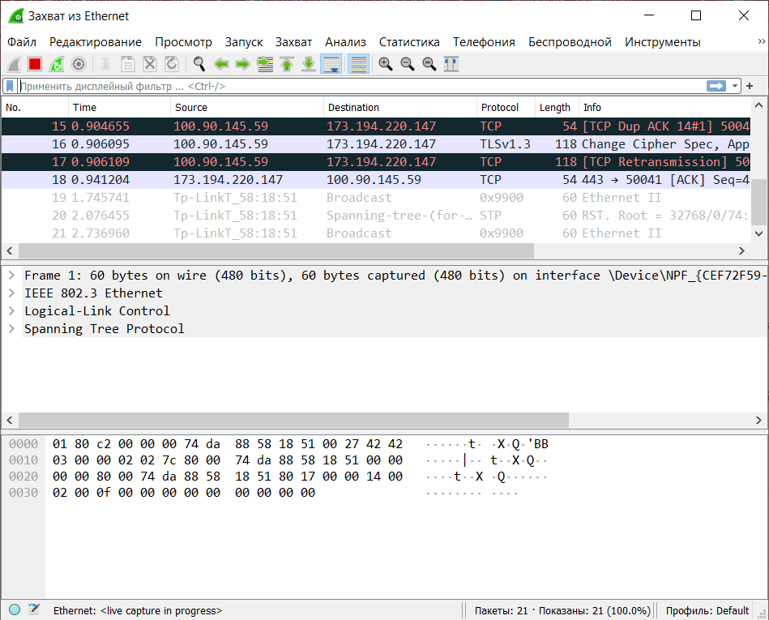Окно захвата содержит следующие разделы:
- Список захваченных кадров (Порядковый номер, время, адрес отправителя и получателя, протокол передачи информации, длина пакета);
- Информация о кадре в текстовом виде;
- Информация о кадре в шестнадцатеричном виде.
При нажатии на кадр в разделах появляется подробная информация о нём.
Чтобы начать захват, необходимо нажать на иконку акулы с левом верхнем углу, чтобы остановить - на красный квадрат, перезапустить захват - на зелёную иконку акулы.
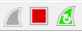В случае повторного захвата данных (нажатия на иконку акулы), будет предложено сохранить предложено сохранить предыдущие кадры (в отдельный файл) или продолжить без сохранения.
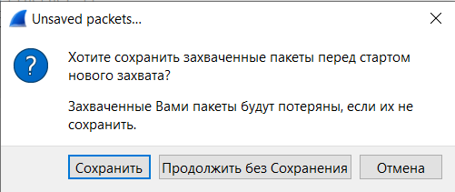Кадры с флагами закрытия в программе выделены серым цветом.
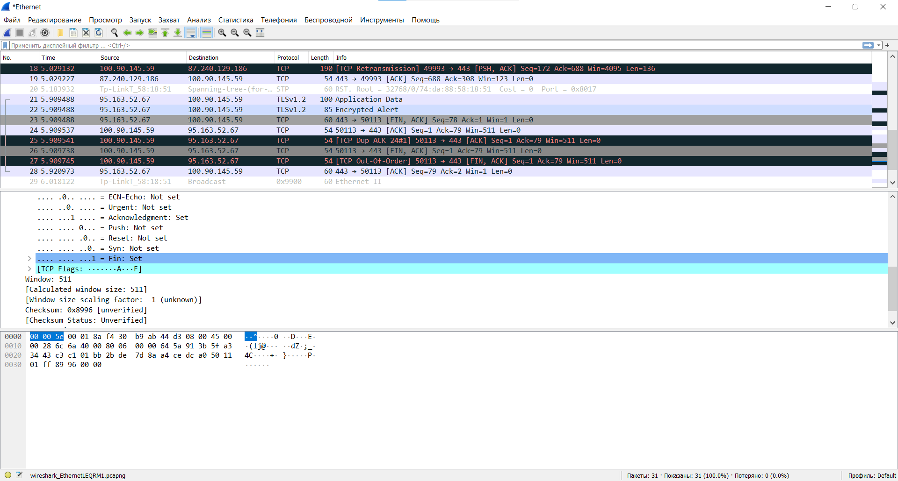Дублирующиеся или пустые пакеты - чёрным.
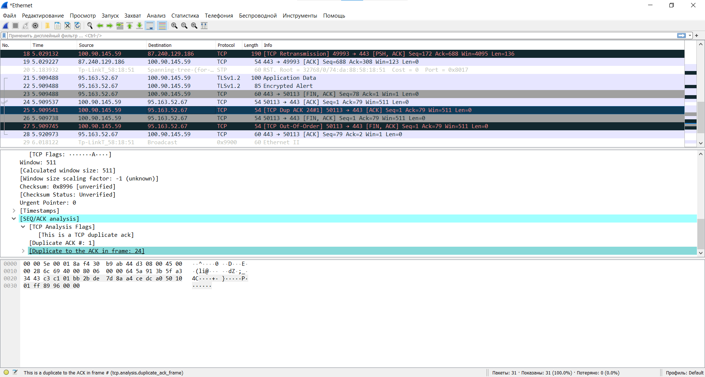Среднее время передачи пакетов, количество выбранных запросов и другую статистику можно посмотреть в окне «Статистика», предварительно остановив захват.
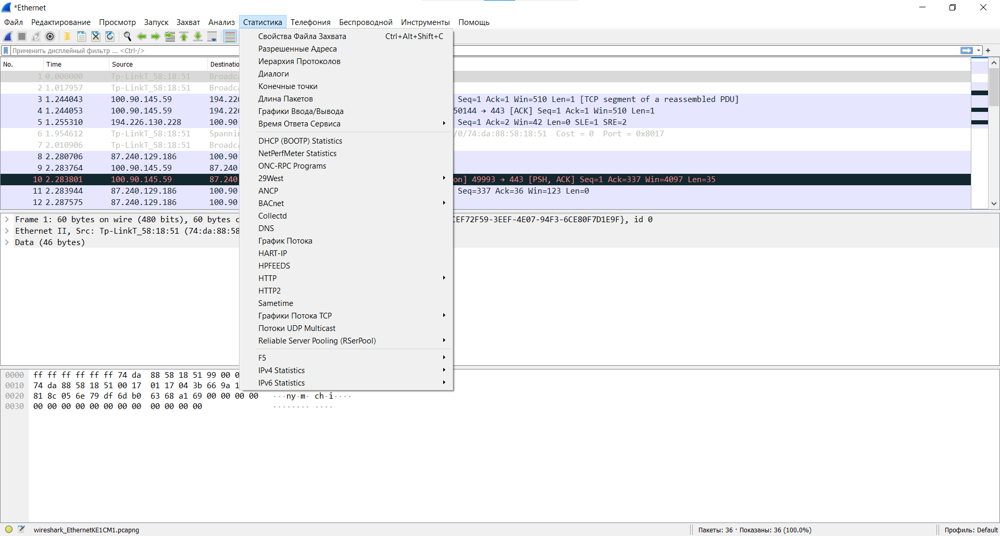Чтобы применить фильтр, необходимо остановить захват кадров, и в разделе «Анализ» выбрать «Дисплейные фильтры».
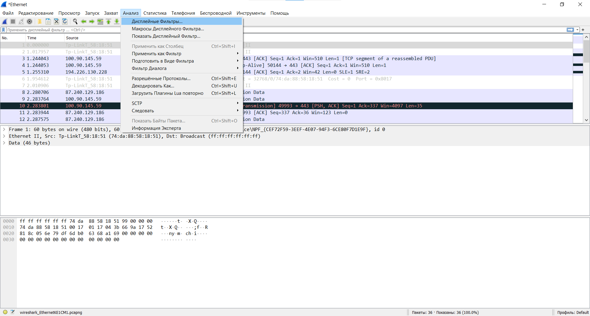В открывшемся окне выбрать необходимый фильтр и нажать «Ок».
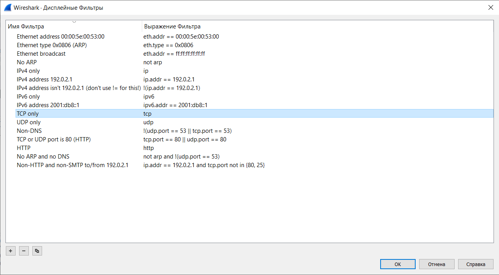В окне останутся только необходимые кадры.